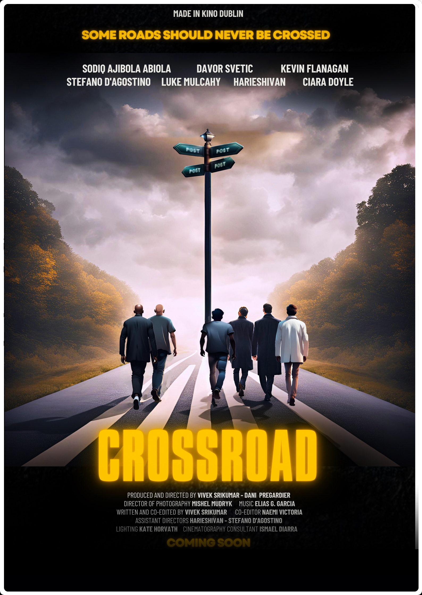
Crossroad
Year: 2025
Genre: Comedy/Action
When longtime friends Sam and Victor face a sudden fallout over Sam's decision to move out, a chance encounter spirals into chaos, testing their bond like never before. As they navigate betrayal, unexpected enemies, and their own emotions, they find themselves at a crossroad - one that could change their lives forever.
Click here for IMDbPhotos from the Set
 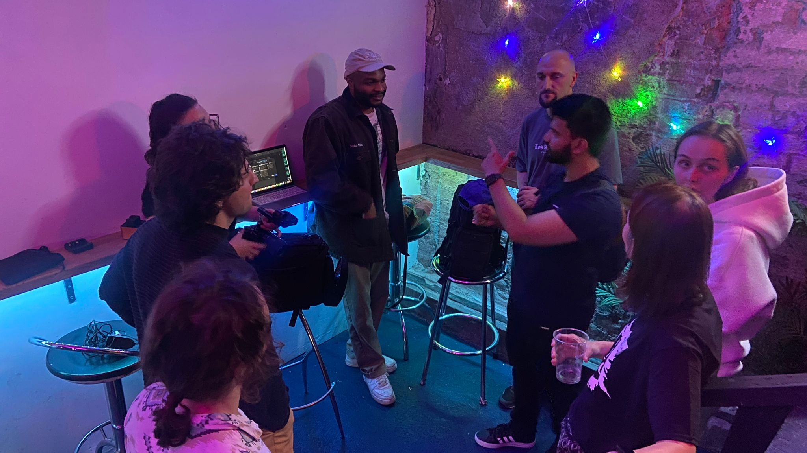
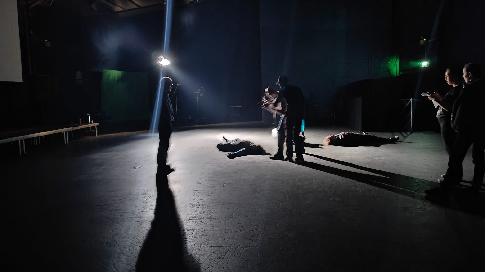
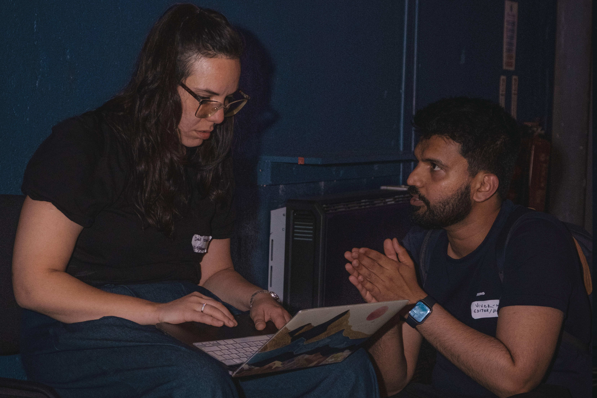
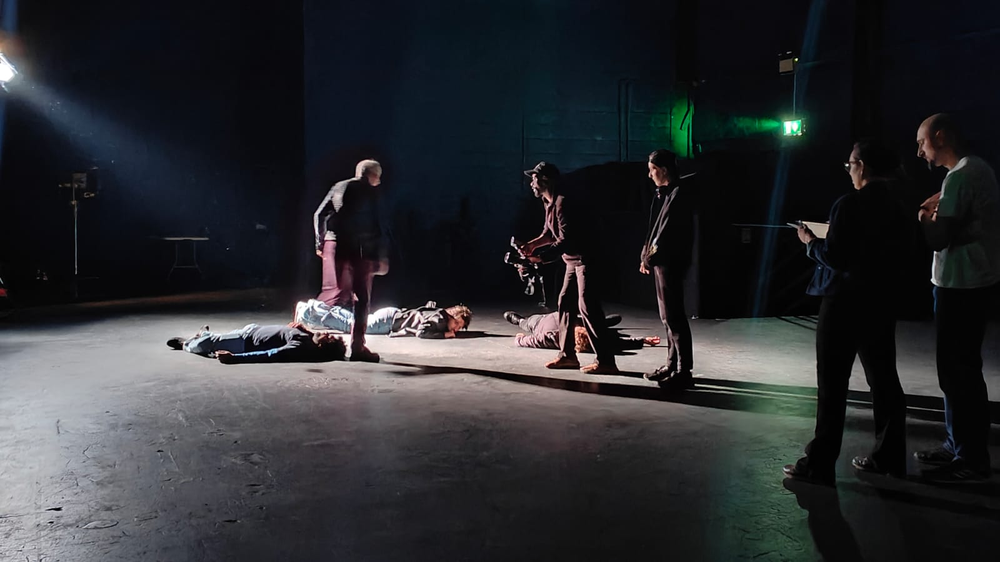
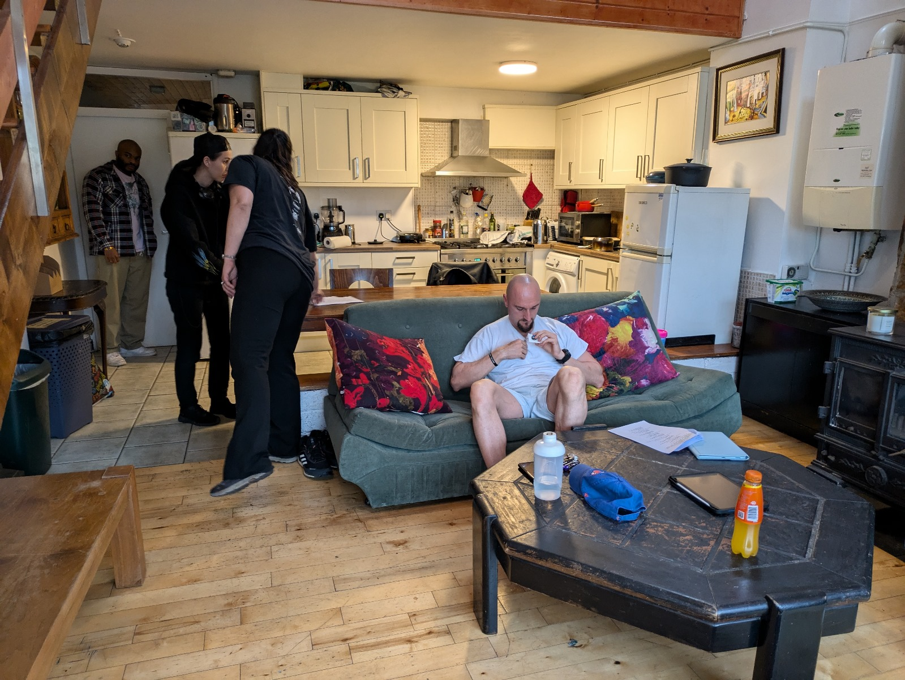
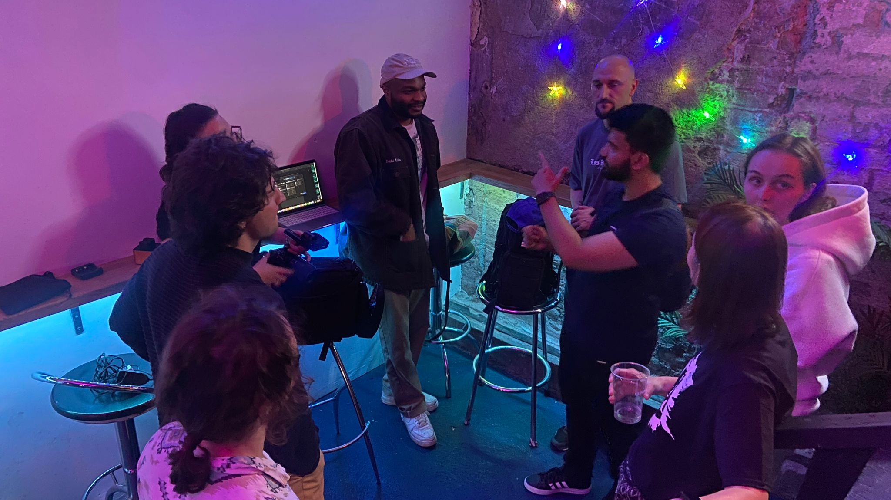
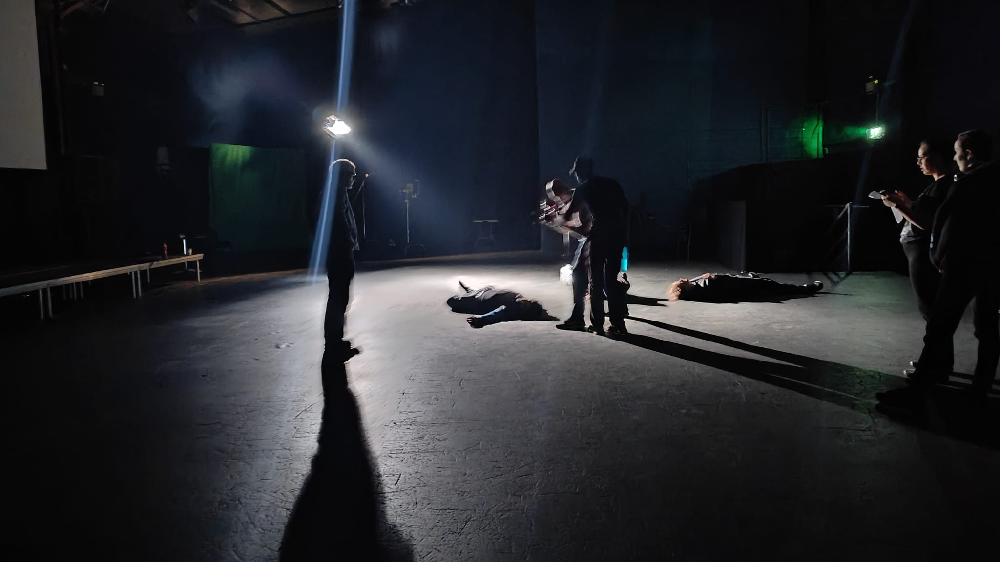
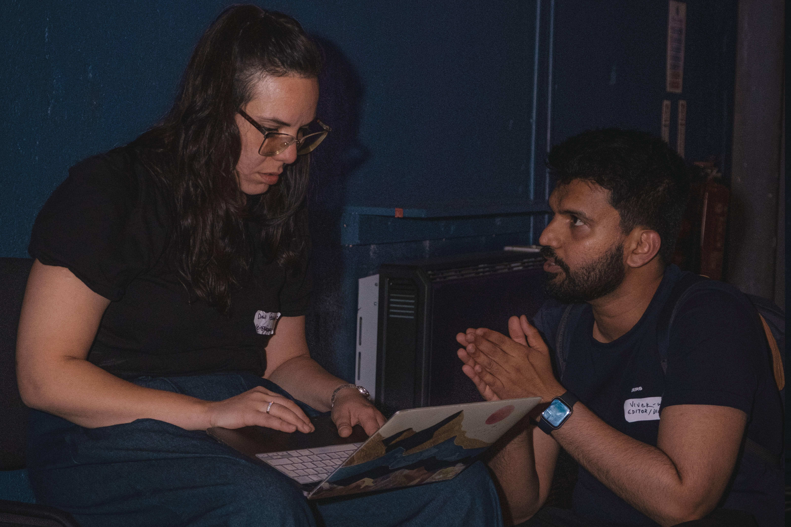
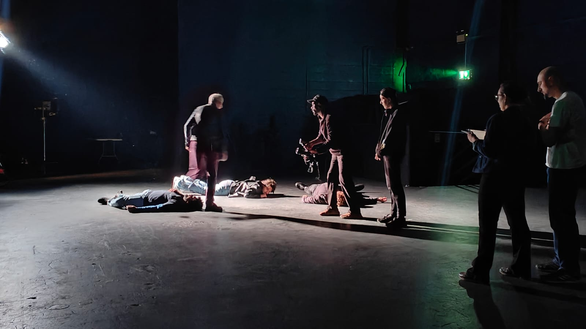
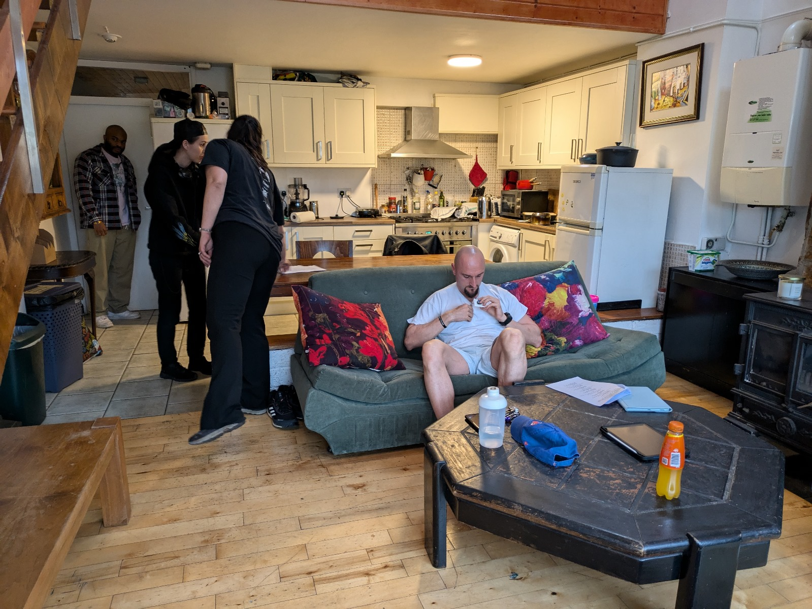